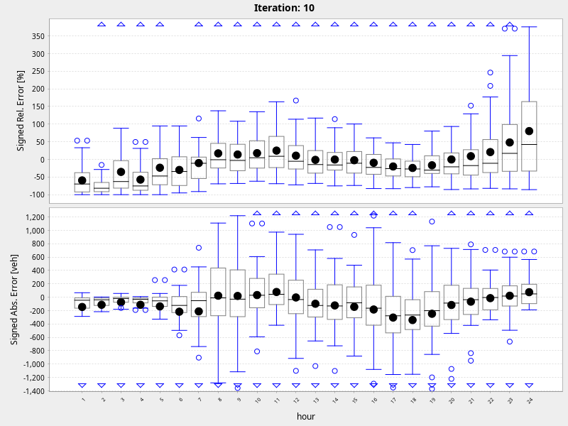

Multi-Agent Transport Simulation Toolkit
Counting Volumes
sim and real volumes:
hour: 1
hour: 2
hour: 3
hour: 4
hour: 5
hour: 6
hour: 7
hour: 8
hour: 9
hour: 10
hour: 11
hour: 12
hour: 13
hour: 14
hour: 15
hour: 16
hour: 17
hour: 18
hour: 19
hour: 20
hour: 21
hour: 22
hour: 23
hour: 24
errors:
errors
biasErrors
link volumes:
link140698
link140699
link140747
link140748
link193378
link193379
link20088
link20115
link215411
link21555
link21556
link23943
link23944
link282336
link282337
link282627
link282628
link286504
link286505
link321196
link333300
link340597
link340598
link343082
link374298
link374509
link418915
link418916
link430021
link430023
link445117
link445118
link487320
link487733
link496973
link539721
link539722
link562926
link562936
link647412
link647413
link88952
average working day sim and count volumes:
simVsRealVolumes24Iteration10
